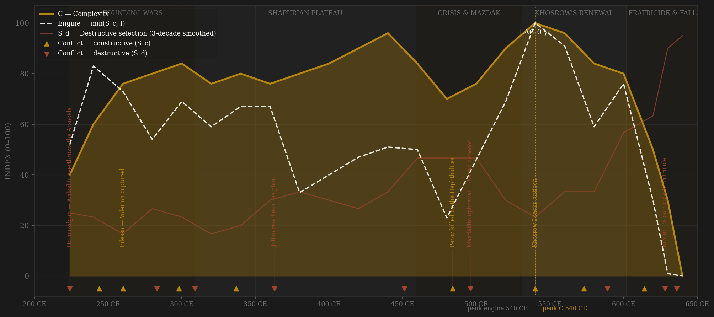
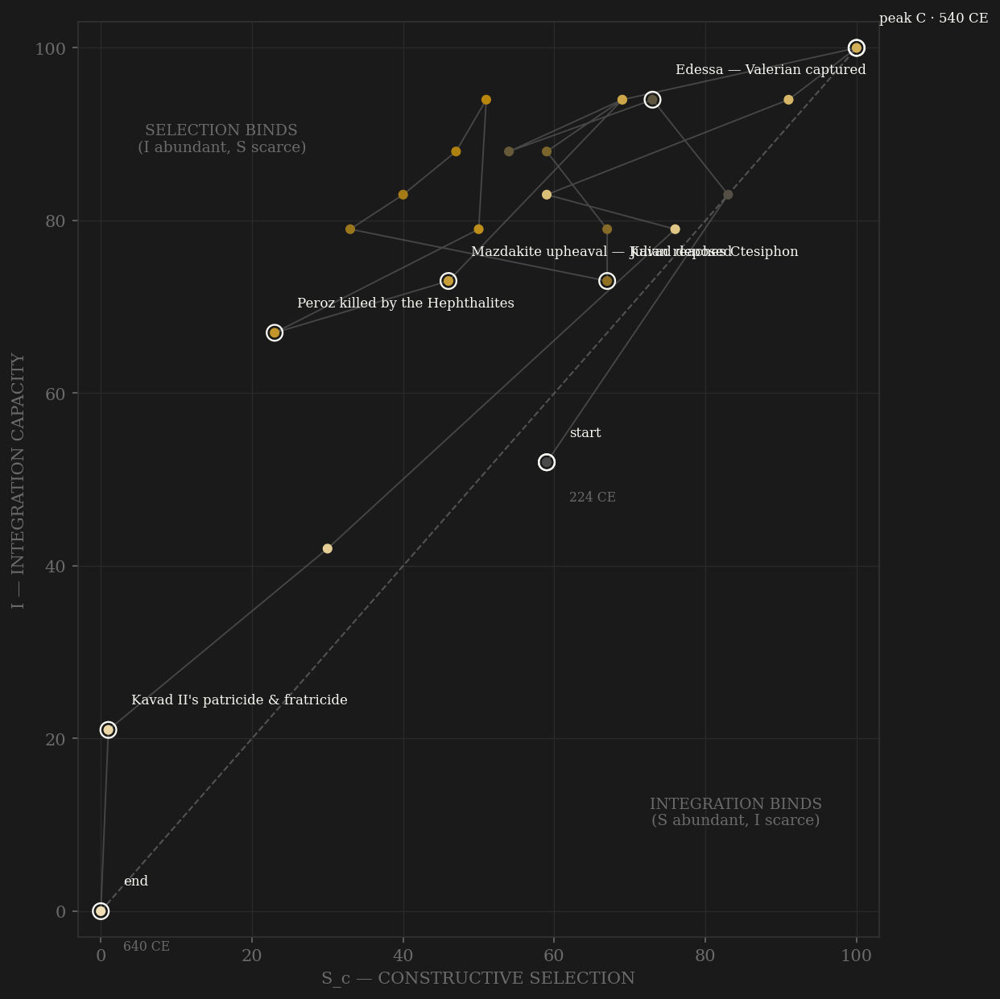

The Sasanian arc is a study in constructive pressure sustained longer than any rival's. Ardashir's founding decade is the ledger's hardest case — the overthrow of the Arsacid order is S_d by locus (a contest for Iran's own machinery) even though it built a stronger state — and from there the Roman frontier supplies four centuries of near-continuous discipline: Shapur I capturing an emperor at Edessa, the Nisibis sieges, Julian's invasion broken at Ctesiphon's gates. Integration climbs on the centralized bureaucracy and the academy at Jundi-Shapur, sags in the fifth century under Hephthalite tribute and the Mazdakite upheaval — the one episode where social revolution reached inside the aristocratic order — and is rebuilt deliberately by Khosrow I: tax reform, the great translation of Indian and Greek learning, the engine's smoothed plateau at 520–540. Complexity peaks in the 540s, at the height of Khosrow's wars with Justinian — a +20 lag, inside the window, though at this file's 20-year resolution that verdict deserves a footnote rather than a trumpet. The end is the steepest fall in the sample outside Baghdad: Khosrow II's maximal war conquers Syria, Jerusalem and Egypt without the integrative capacity to hold them; Heraclius's counterstroke reaches Dastagird; Kavad II murders his father and every royal brother; and the 628–632 chaos runs through ten rulers before Yazdegerd III inherits a state that Qadisiyyah and Nahavand erase within a decade.

The trajectory enters mid-plot at the founding contest and immediately climbs both axes — the young dynasty converting Roman war into internal consolidation, the phase-space signature of constructive pressure working. It crosses the diagonal early and, like Song and the Achaemenids before it, lives most of its life in the selection-binds region: the bureaucratic-Zoroastrian state rarely lacked coordination; its constructive channel oscillated with each Roman round. The fifth century drags the path down-left — Hephthalite tribute, Peroz dead on the steppe, Mazdak's levellers inside the elite — and the recovery under Khosrow I traces the sample's clearest reform loop: up the I-axis first, then out along S as the Justinianic wars resume, cresting at the 540s corner. The terminal fall is near-vertical and unbroken: from the 600s row (peak S_c, the great war) the path plunges through the 620s collapse to end, like the Achaemenid file, pinned at the origin — integration did not erode, it was decapitated, brother by brother, in a single generation.
Coded by locus and target, never by outcome. The Sasanian ledger is where the locus rule earns its keep against outcome-coding most visibly: Peroz's Hephthalite wars ended in catastrophe — the king dead, the treasury paying tribute — yet they are S_c, frontier contests that never aimed at the machinery; while the bloodless-sounding 'succession arrangements' of 309, 383–388 and 420–421 are S_d, nobles and priests unmaking kings. Julian's 363 invasion is the Alaric rule applied early: external origin, but an army at Ctesiphon's walls is core penetration. Bahram Chobin's usurpation of 589–591 — the first non-Sasanian to claim the throne in four centuries — and Kavad II's fratricide of 628 are the interior catastrophes: the second extinguished so many royal males that the succession chaos of 628–632 crowned generals, children and queens in turn. The Arab conquest closes the ledger as it closed the Achaemenid one: external origin, terminal core-destroying locus — Qadisiyyah, Ctesiphon, Nahavand.
| YEAR | CONFLICT | CODE | CODING RATIONALE |
|---|---|---|---|
| 224 CE | Hormozdgan — Ardashir overthrows the Arsacids | Sd | A contest for Iran's own coordination machinery — founding violence, S_d by locus even though it built a stronger state |
| 244 CE | Misiche — Gordian III defeated | Sc | Roman frontier war; a peer emperor dead on the Euphrates, the core untouched |
| 260 CE | Edessa — Valerian captured | Sc | The constructive apex of the early dynasty: an emperor taken alive in open frontier war |
| 283 CE | Carus sacks Ctesiphon | Sd | External origin, core penetration — a Roman army in the capital is the Alaric rule, not a border contest |
| 298 CE | Satala & the Peace of Nisibis | Sc | Narseh's defeat in frontier war; provinces ceded by treaty, machinery intact |
| 309 CE | Succession purge — Adur Narseh killed | Sd | Nobles kill one prince, blind a second, crown an unborn child — the court editing its own succession |
| 337 CE | Shapur II's Nisibis wars | Sc | Three sieges and a generation of disciplined frontier contest with Rome |
| 363 CE | Julian reaches Ctesiphon | Sd | Victorious outcome, but an invading army at the capital's walls is core penetration — locus, never outcome |
| 451 CE | Avarayr — Armenian revolt | Sd | A Christian province in arms against the confessional machinery of the state |
| 484 CE | Peroz killed by the Hephthalites | Sc | Catastrophic outcome — king dead, tribute paid — but a steppe frontier war by locus; the hard case that proves the rule |
| 496 CE | Mazdakite upheaval — Kavad deposed | Sd | Social revolution inside the aristocratic order; the king deposed, restored by foreign lances, the land settlement convulsed |
| 540 CE | Khosrow I sacks Antioch | Sc | The renewal-era apex: peer war with Justinian's Rome, waged from a reformed and solvent state |
| 573 CE | Capture of Dara | Sc | The fortress-city taken in the long war of 572–591; frontier contest at maximum intensity |
| 589 CE | Bahram Chobin's usurpation | Sd | A general takes the throne — the first non-Sasanian claimant in four centuries; Hormizd IV deposed and killed |
| 614 CE | Fall of Jerusalem | Sc | Khosrow II's maximal war — Syria, Jerusalem, Egypt: external contest at the greatest reach, the core still untouched |
| 628 CE | Kavad II's patricide & fratricide | Sd | Khosrow II executed, every royal brother murdered — the succession pool itself destroyed; ten rulers follow in four years |
| 636 CE | Qadisiyyah & the fall of Ctesiphon | Sd | External origin, terminal core-destroying locus — the capital lost, then Nahavand 642 ends organized resistance |
| COMPONENT | GRADE | BASIS |
|---|---|---|
| S — Selection (gross) | ○ scholar-coded | Campaign ordinals from Daryaee (2009, 2014); Howard-Johnston (2021) The Last Great War of Antiquity for 602–628; Roman/Byzantine narrative sources for frontier chronology |
| S_c / S_d — decomposed (v1, frozen) | ○ scholar-coded | Locus-and-target coding added at the dynasty split, 0–10 ordinals → 0–100 within dynasty; per-decade rationales in coding_ledger.csv. Kept as Sc_v1_combat per the v2 amendment |
| S_c v2 — contestability composite | ○ scholar-coded | 0.40 elite-entry (dehqan service-gentry emergence; priesthood hierarchy careers and sponsored disputations — Kerdir's rank-by-rank cursus, Adurbad's ordeal; Khosrow I's reforms opening tax office to a professional scribal service and military office via the salaried asawaran drawn from lesser gentry, Rubin 1995, Daryaee 2009; Jundi-Shapur court disputation culture) + 0.30 external rivalry (HARD CAP; the v1 locus-cleaned war ordinal) + 0.30 within-rules noble-house balancing (Ardashir's compact with the great houses, the Paikuli assembly of 293, regency councils pre-Mazdak; Khosrow's reformed four-spahbed council after). Default 0.4/0.3/0.3 weights, no deviation. Rationales in coding_ledger_v2.csv |
| I — Integration | ○ scholar-coded | Bureaucratic centralization, Jundi-Shapur academy, Silk Road trade, tolerance swings — Canepa (2018), Daryaee (2014); no measured administrative series survives |
| C — Complexity | ○ scholar-coded | Architecture (Bishapur, Taq-e Bostan), academy output, silverwork per Harper (1981); levels are judgment calls on consensus historiography |
| R — Renewal | ○ estimates | McEvedy & Jones population, ~22–25M, near-flat — carries little signal |
| E — Entropy | ○ scholar-coded | Succession-crisis frequency, fiscal integrity, orthodoxy pressure, Mazdakite disruption — Daryaee (2009), Howard-Johnston (2021) |
23 rows, 224–640, carved from the deprecated three-dynasty persia composite by build_persia_split_sicre.py and re-min-max-normalized within dynasty. CAVEAT: the inherited grid is ~20-year bins, not decades — the frozen 3-row rolling mean therefore spans ~60yr and peak resolution is ±20yr. S_c v2 AMENDMENT (2026-07-06): Sc_constructive is now the contestability composite (0.40 elite-entry + 0.30 external-rivalry hard cap + 0.30 within-rules politics); the combat series is frozen as Sc_v1_combat, channel rationales in coding_ledger_v2.csv. Frozen-protocol lags under BOTH definitions: v1 combat — smoothed engine ties exactly at 520 and 540 (Khosrow I plateau; protocol takes the earlier row), C peaks 540, lag +20 knife-edge PASS; v2 contestability — engine peaks 540 (Khosrow's reforms: fixed tax rolls + salaried asawaran opened to the dehqan gentry), C peaks 540, lag +0 SIMULTANEOUS. VERDICT FLIP shown, not hidden: the v1 pass rode a smoothing tie-break; under v2 the reform-era contest machine and the complexity peak land on the same 20-year bin — the honest reading either way is 'engine and C crest together on Khosrow's reform plateau, engine no later'. Grade ○ throughout. Rebuild: build_persia_split_sicre.py, then polity_report.py --slug sasanian